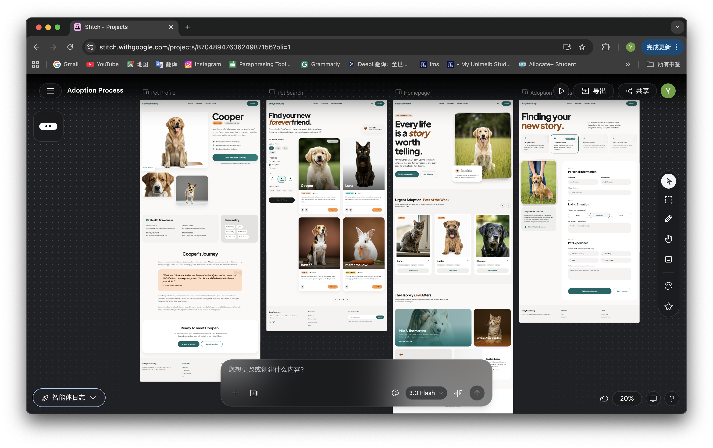
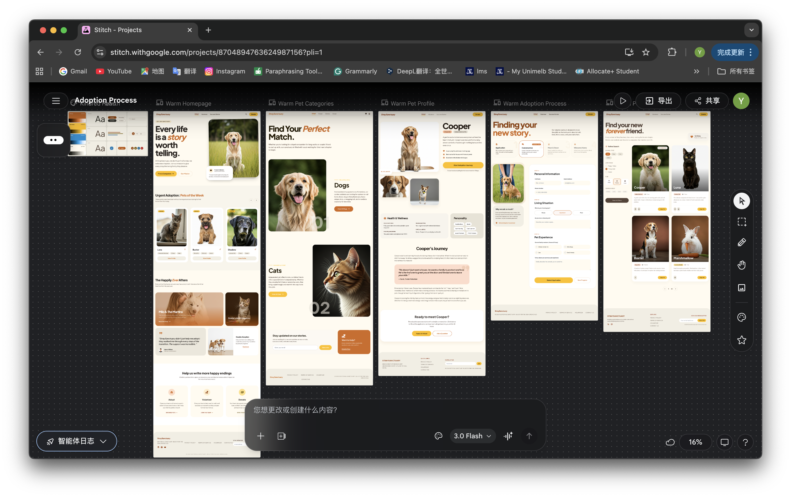

This week, our tutor introduced us to Stitch, a new design tool by Google. It is an AI-based interface design tool that allows users to generate website or app layouts by simply entering text prompts, helping designers quickly explore ideas and structure. During the class, we experimented with the tool. I entered the prompt “create a website for stray animal adoption, avoiding an overly AI-generated style,” aiming to produce a more natural and human-centred design rather than something that looks generic or overly artificial.

However, I found that the initial webpage was not very clear in terms of information hierarchy, and it was difficult for users to quickly navigate and find what they needed. I also felt that adopting stray animals is a warm and emotional experience, but the original colour palette of the page felt too cold and lacked this sense of warmth. Therefore, I refined my prompt and added: “include a page that categorises cats and dogs to make it easier for users to browse, and adjust the overall colour palette to feel warmer.” I aimed to improve usability through clearer categorisation, while also creating a more emotionally engaging atmosphere through colour. This process made me realise how refining prompts can help guide AI to produce outcomes that better align with my design intentions.

Through using Stitch, I found that it can help me generate ideas more quickly and make the early stage of design easier. However, I also feel that it can limit creativity to some extent, as the results can become quite similar and fall into predictable patterns. So I think it works better as a supporting tool rather than something to rely on completely.